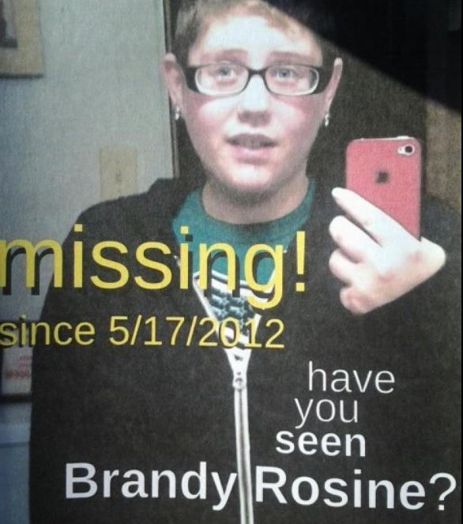

A senseless crime
In the days and weeks leading up to her death, Brandy was going on adventures with her best friend and her friend's family. She was working, making friends, and going about her life.
She had been keeping in touch with a friend she had dated about a year and a half prior, named Jade. So maybe it wasn't all that odd when Brandy was invited to Cochranton, PA to visit her.
It was Thursday, May 17th when Brandy made the drive. She texted a friend that she had a bad feeling about going, but she still made the trip, which was over an hour long. Brandy eventually texted that same friend to say she wasn't feeling well and was going to stop at Subway to get something to eat. (Brandy had diabetes, and had to be careful about her blood sugar.)
That was the last time anyone heard from her.
As hours turned into days without word from Brandy, her family and friends grew increasingly concerned. They filed a missing person's report, emphasizing her medical condition to expedite the search. Efforts to contact Jade were met with claims that Brandy never arrived.
Friday passed. Saturday passed. Sunday passed, with a trip to Cochranton to check for signs of Brandy's car. Nothing.
On Monday, May 21, a breakthrough came when Brandy's cell phone pinged a tower in Meadville, Pennsylvania. Her loved ones canvassed the area, distributing flyers and seeking information. A kind woman in Meadville asked if she could pray with them; she held their hands, and they bowed their heads in determination to get a sign from Brandy.

That evening, an anonymous tip led authorities to discover Brandy's car hidden in the back garage of the residence, meticulously cleaned, something it almost never was.
Jade and her new girlfriend, Ashley Barber, fled on foot but were soon apprehended by an officer on his way home from a shift, who noticed two girls matching the description he'd heard. Under interrogation, they eventually confessed to Brandy's premeditated murder. Investigators learned they had dug a grave days before Brandy's arrival, revealing the calculated nature of their plan.
Back at the residence, investigators with canines found the loose dirt where Brandy had been buried. It was late Tuesday night into Wednesday morning, May 24, 2012, when Brandy's family and friends faced the harsh reality that their beloved Brandy was truly gone.
Both Jade Olmstead and Ashley Barber were convicted and are serving life sentences without the possibility of parole in Pennsylvania. The loss of Brandy, a vibrant and caring person, remains a profound tragedy for all who knew her.
As someone who thought of Brandy as a little sister, it is hard to get into the details of what happened. But I feel it's important that they remain available for people who want to read them. If you are one of those people, in a solid headspace and with space to grieve, the links below share more: